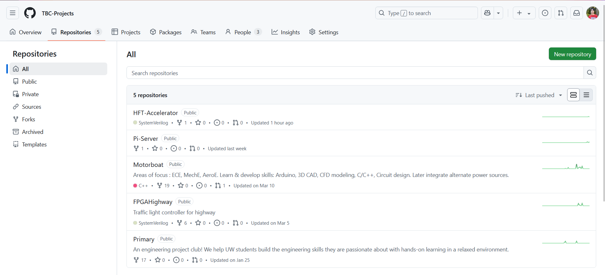
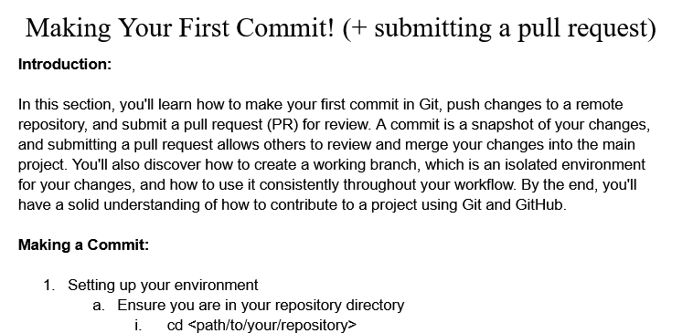
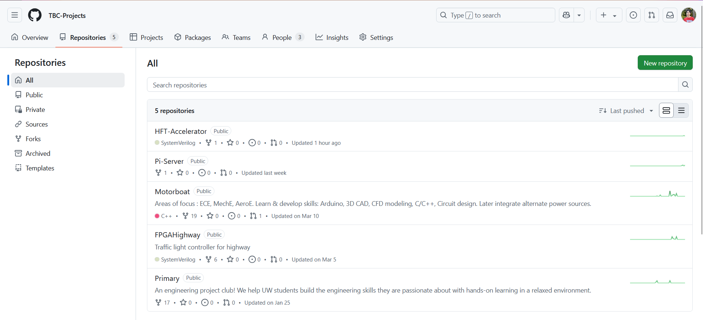
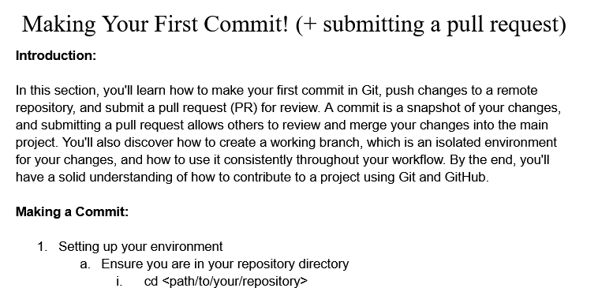

Projects
Explore some of the exciting projects our members are currently working on.
Raspberry Pi Server


The infrastructure behind this website! This project involves four teams—Hardware, Firmware, Cybersecurity, and WebDev—collaborating to deploy a full-stack web server hosted on Raspberry Pi hardware.
2025 In-ServiceMini Motorboat Project


A collaborative build of a wireless-controlled motorboat. Mechanical team led chassis design and CFD analysis, while the electrical team built the ESP32-based wireless control system. A multidisciplinary project merging fluid dynamics and electronics.
2024 OngoingHigh Frequency Trading (HFT) Accelerator

An ambitious project combining FPGA hardware acceleration and Python scripting to create a platform for high-frequency trading simulations and research. Focuses on low-latency systems and financial computing.
2025 OngoingFGPA Traffic Light Controller
Designed on the DE1-SoC platform, this FPGA project uses SystemVerilog to manage a traffic intersection. It demonstrates hardware design with sequential and combinational logic prioritizing a main highway over a rural road.
2024 CompletedUW GPT Chatbot
A custom-trained GPT chatbot that uses University of Washington APIs to provide insightful responses about courses, majors, and student life. Features include course averages, graduation requirements, and academic advice.
2024 CompletedThe Boring Club Git Initiative
 



Established a GitHub organization for the club, complete with repositories and structured learning materials. Concluded with an all-club hands-on workshop on Git, enhancing collaboration and professional workflows. Utilized Bash scripting for demonstrations.
2024 CompletedRemote-Controlled Car


An Arduino-based, 3D-printed RC car built from scratch. Members gained hands-on experience in electronics, mechanical design, and control systems using Arduino C.
2023 CompletedArduino Projects Collection
A creative set of electronics mini-projects including a digital piano, a light theremin, and a buzzer reaction game using Raspberry Pi Pico. These projects introduced members to embedded systems using Arduino C and MicroPython.
2023 Completed